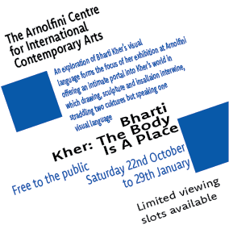
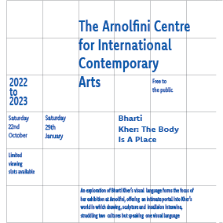
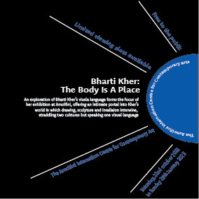
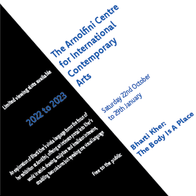
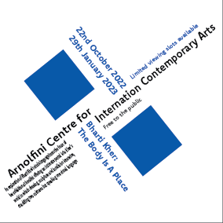

Transitional Typography Poster.
Transitional is the idea that text will flow in a natural way, it usually looks unorganised and isn't used for a lot of projects and is most often seen in books and movie posters.

Grid Typography Poster. A grid is a system of horizontal and vertical lines that can guide layout choices. Grids have been part of page layout since the Gutenberg Bible.

Radial Typogaphy Poster. Radial Typographic System means most of the body text are placed radioactively around a center. Radial system gives people the feeling that all the words are either spread out from a center or coming together into a point.

Axial Typogarphy Poster. Everything is divided by an imaginary line (axis) To create a bilateral design, put the center of everything on the same line.

Bilateral Typography Poster. The symmetry of this typographic
system means it's equal on both the left and right sides

Dilitational Typography Poster. This poster i did so all the text was in a circular motion around the screen. Where the text forms curves around a point.

Random Typography Poster. For my random poster i did it so all the text was on every corner of the screen and all facing in different directions.

Modular Typography Poster. . Modular layouts use repeating structures to break up the content.